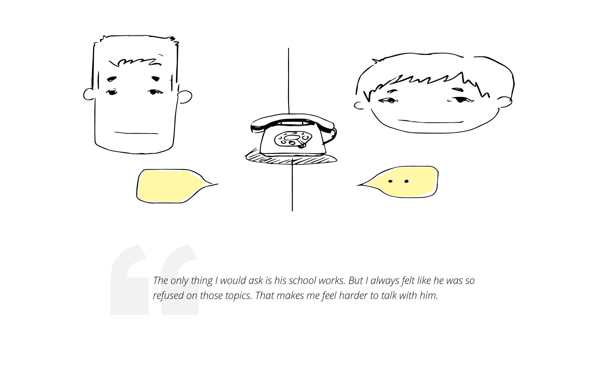
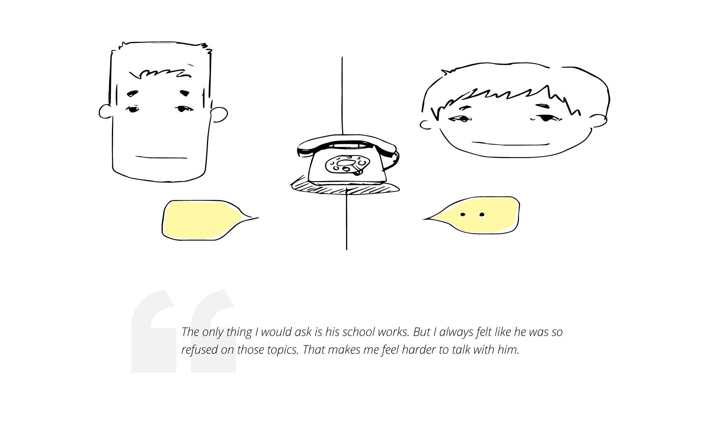
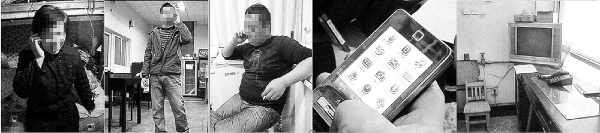
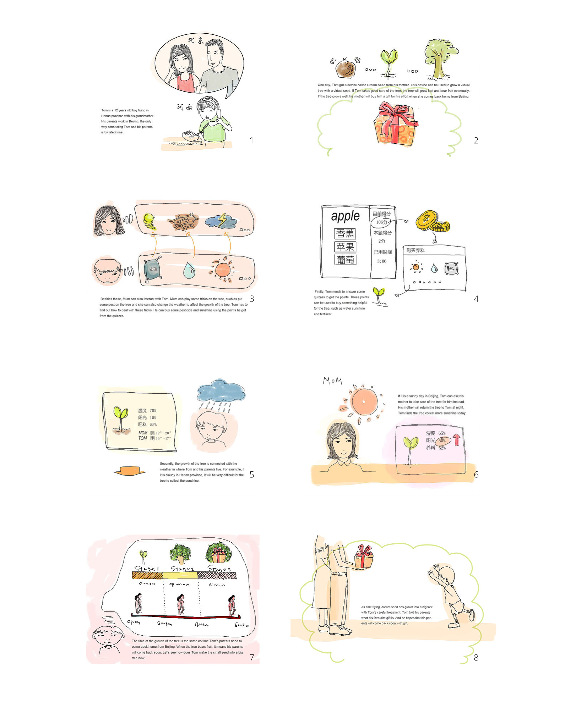
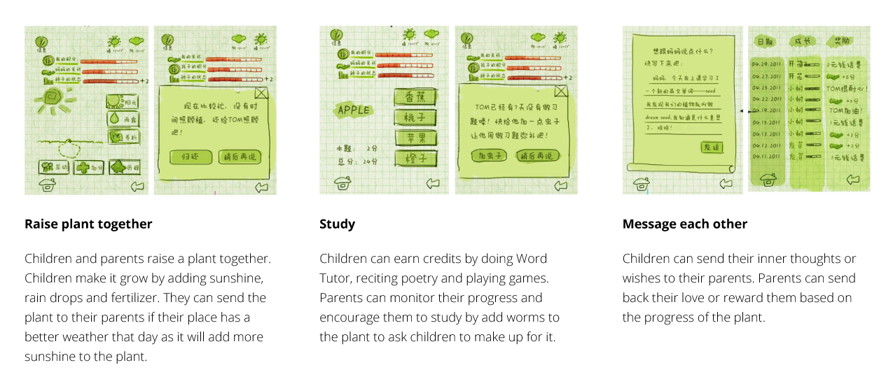

Nokia User experience project
Help bound emotional connection between migrant worksers and their left-behind children.
Duration: 3 months, 2012 | Role: UX designer
Duration: 3 months, 2012 | Role: UX designer
01.problem
Migrant worker is an increasing population in big cities of China. They left their hometowns for cities, where they can earn
more money to afford for a higher quality life. However, they usually left their children in hometown with their grandparents.
Currently, there are 58 million children are left behind who cannot have a wholesome and happy childhood because their
parents are absent. Our goal is to enhance the emotional connection between migrants and their children.


02.Insights through research

In our research, firstly we ran several rounds of desk study. And then a series of exploratory researches followed up, such as Video Ethnography and In-depth Interview. At last step, we conducted In-home Visit in their hometowns, we went out of Beijing, talked to their families in other provinces to learn their lives from other perpsectives.
Through synthesis, we came to three major insights
Through synthesis, we came to three major insights
- 1.Lack of topic. The schoolwork was the parents care most and ask quite often in their communication. Unfortunately, that was the last topic the children want to talk with their parents. Thus, this contradiction on topics led to a poor quality of communication.
- 2.Inability to supervise children's study. Parents don't know if their children are spending time studing.
- 3.Lack of co-experience. Children and parents are missing lots activities compared to other normal families.
03.Persona
04. Design direction
How could we design a meaningful remote co-experience that has similar good memory trigger in normal families?
Those greatest memories with families from childhood were playing games together or the child was given a gift by parents.
After brainstorming, ideation and iteration, We finally came to the idea of developing a application called “Dream Seeds". Kids plant a seed in the app and take care of it with their parents remotely. Parents can set a time of the next time they go back home. And the seed will grow up into a present which parents give them if the seed is took care well by children. Children can do puzzles to gain scores which can be exchanged for water and nutritions for seeds growing.The application can also detect the real-time weather in both sides. And kids can ask their parents to get more sunshine for the plant if there is no sunlight at home. With these interactions, kids feel more connecting with their parents and feel like the care of their parents has never been absent. And it helps children to develop a sense of safety as well, since they know they parents love them and they always come back to them at some points.
Those greatest memories with families from childhood were playing games together or the child was given a gift by parents.
After brainstorming, ideation and iteration, We finally came to the idea of developing a application called “Dream Seeds". Kids plant a seed in the app and take care of it with their parents remotely. Parents can set a time of the next time they go back home. And the seed will grow up into a present which parents give them if the seed is took care well by children. Children can do puzzles to gain scores which can be exchanged for water and nutritions for seeds growing.The application can also detect the real-time weather in both sides. And kids can ask their parents to get more sunshine for the plant if there is no sunlight at home. With these interactions, kids feel more connecting with their parents and feel like the care of their parents has never been absent. And it helps children to develop a sense of safety as well, since they know they parents love them and they always come back to them at some points.
05.Storyboard: How does dream seeds work

06.UI

07.Information Architecture